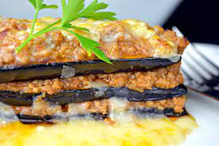

Para 1 personas:
-Atún fresco 150 g
-Alga wakame seca 3 g
-Alga hijiki seca 2 g
-Cebolleta pequeña
-Cebollino 3
-Aguacate pequeño (o medio grande)
-Semillas de sésamo negro 5 g
-Salsa de soja baja en sal 5 ml
-Aceite de sésamo opcional 2 ml
-Chile seco al gusto
-Zumo de limón o lima
-Sal una pizca
-Cómo hacer ensalada poke de atún, algas y aguacate
Dificultad: Fácil, Tiempo total:10, Elaboración:10 m,Reposo:5 m
Si usamos pescado congelado, descongelar la noche antes sobre una rejilla en la parte menos fría de la nevera. Secar bien con papel de cocina y cortar en cubos de tamaño de un bocado con un buen cuchillo. Reservar. Rehidratar las algas wakame y las hijiki en un cuenco con agua caliente, unos 5-10 minutos. Escurrir muy bien y picar. Lavar y picar la cebolleta muy fina y el cebollino. Cortar en gajos el aguacate sin la piel. Tostar las semillas de sésamo si se desea. Disponer en un plato o fuente el pescado y mezclar con la cebolleta, la mitad del cebollino, las algas, la salsa de soja y el aceite de sésamo. Colocar en un cuenco de servir y añadir el aguacate, al que mojaremos con un poco de zumo de lima o limón. Añadir un poco de cayena, sal y decorar con el resto del cebollino.
Lasaña de berenjenas
Ingredientes
-2 o 3 berenjenas grandes
-1 cebolla mediana
-2 dientes de ajo
-1 lata de tomate triturado de 800 gramos
-300 gramos de queso mozzarella
-300 gramos de queso ricotta
-Queso parmesano al gusto
-Sal
-Pimienta
-Orégano
-Aceite de oliva
-Lonchas de jamón (opcional para quienes no son vegetarianos)
-Hierbas italianas
Cómo hacer una lasaña de berenjenas
La lasaña de berenjenas es una alternativa deliciosa que no resulta demasiado compleja de elaborar si ya has preparado con anterioridad lasañas. Para comenzar es muy importante que la berenjena suelte el exceso de agua, de esta forma al cocinarse quedará mucho más consistente.Para conseguirlo deberás lavar y pelar las berenjenas, luego tendrás que cortarlas en láminas horizontales de medio centímetro aproximadamente que servirán como la pasta en este plato. Coloca las láminas extendidas en un plato y espolvoréalas bien de sal gruesa, luego déjalas soltar el agua durante al menos 30 minutos, aunque mientras más tiempo pase mejor.Mientras tanto puedes preparar la salsa de tu lasaña de berenjenas. Para hacerlo corta en pequeños trozos o tritura los dos dientes de ajo, además de cortar en pequeños cubos la cebolla. Añade a una sartén dos cucharadas de aceite de oliva y lleva a fuego medio, incorpora la cebolla y póchala cocinando hasta que esté ligeramente transparente, luego añade los ajos y deja cocinar por 3 minutos. Después deberás incorporar el tomate triturado, remueve bien y añade sal, pimienta y orégano al gusto. Si cuentas con otras hierbas como albahaca o perejil se recomienda añadir un poco para darle mayor gusto a la salsa. Cocina a fuego medio bajo removiendo de forma frecuente hasta que la salsa haya espesado y adquirido un color rojo intenso. Corrige la sal pimienta hasta que esté a tu gusto y retira del fuego cuando esté lista. Precalienta el horno a 200 ºC y prepárate a dorar un poco las berenjenas. Para hacerlo lava previamente las berenjenas con agua fría para retirar la sal, sécalas muy bien y luego reserva. En una sartén añade 4 cucharadas de aceite de oliva y lleva a fuego medio. Incorpora poco a poco las láminas de berenjena y permite que se doren unos minutos por ambos lados para darle más sabor, es importante que vayas poco a poco sin apilar las láminas. Después escurre muy bien en un plato con papel absorbente.Una vez listas, podrás comenzar el montaje de tu lasaña de berenjenas. En una bandeja profunda, amplia y apta para el horno, añade un poco de aceite y harina y esparce bien hasta cubrirla con el fin de evitar que la lasaña se pegue. Coloca una capa de berenjenas, una de queso mozzarella y otra de queso ricotta, adereza con hierbas italianas, si no eres vegetariano coloca las lonchas de jamón y luego añade una capa de salsa de tomate. Repite hasta llenar la bandeja procurando que no quede muy al borde para que no se salga durante la cocción. La capa final deberá ir cubierta por salsa de tomate y abundante queso parmesano.Tapa la bandeja con papel aluminio y lleva al horno a 200 ºC durante media hora. Transcurrido este tiempo retira el papel aluminio y deja cocinar hasta que el queso parmesano esté completamente gratinado. Retira tu lasaña de berenjenas del horno y deja reposar 5 minutos antes de cortar y comer. Esta receta resulta realmente deliciosa, por eso anímate a probarla y chuparte los dedos con los resultados.

Salteado de setas y gambas
Ingredientes
-200 g de setas
-12 colas de langostinos o gambas
-2 cucharadas soperas de aceite de oliva
-1 guindilla
-6 dientes de ajo picados
-Sal
Cómo hacer salteado de setas y gambas
Ponemos dos cucharadas de aceite de oliva y echamos el ajo picado en una sartén.Cuando el ajo se vaya dorando añadimos las setas limpias y cortadas en trozos.Dejamos que se reduzcan las setas y se rehoguen bien.Cuando las setas están bien rehogadas añadimos las gambas o langostinos y una pizca de sal... Yo añado aquí la guindilla porque no me gusta que las setas al ajillo queden muy picantes...Y listo... también se le puede añadir a las setas con gambas al ajillo un par de huevos y sería un revuelto exquisito... aunque a mí hoy me apetecía sólo.
Para más info. y consejos tenemos una oficina en Avenida de la Osa Mayor en el barrio de Moncloa, Madrid